Bosszúállók
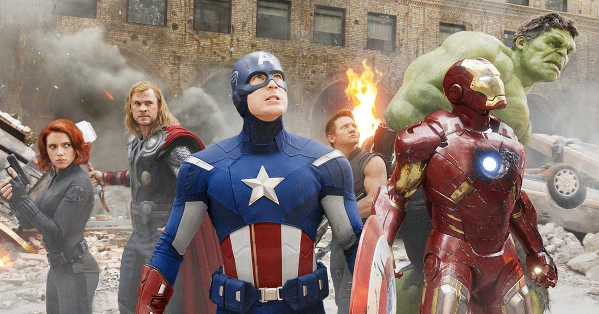
A Bosszúállók (eredeti cím: Marvel’s The Avengers) 2012-ben bemutatott szuperhős-fantasy film. A történet
alapja a Marvel Comics képregénykiadó által 1963-ban kitalált Bosszú Angyalai nevű szuperhőscsapat. Főszereplők:
Robert Downey Jr., Chris Evans, Mark Ruffalo, Chris Hemsworth, Scarlett Johansson, Jeremy Renner, Tom
Hiddleston, Samuel L. Jackson. Magyarországon április 26-án került a mozikba. Promóciós anyagokon Marvel’s
Bosszúállók, Marvel: Bosszúállók és Bosszúállók a Marveltől címen is feltűntek. A film szereplői és cselekménye
a főszereplők korábbi önálló filmjein alapulnak, azoknak közvetlen folytatása.
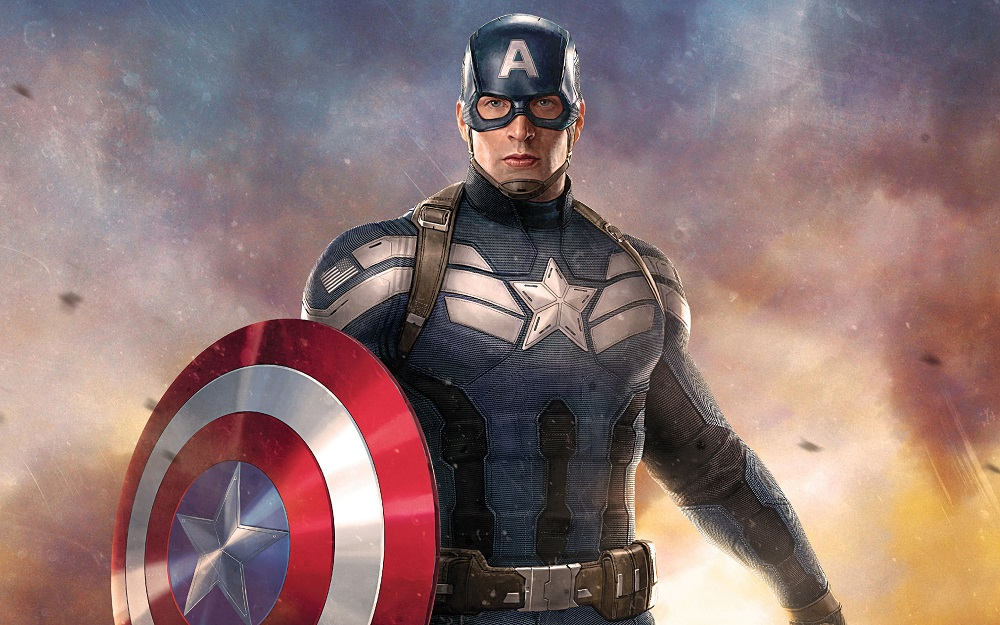
Amerika kapitány
Amerika kapitány
Amerika Kapitány eredetének és kapcsolatainak részletei folyamatosan változtak a képregények aranykora óta
egészen a modern korig.Amerika Kapitány kalandjai folyamatosan jelentek meg,
melyet csak egyetlen szünet szakított meg 1954-től 1964-ig.
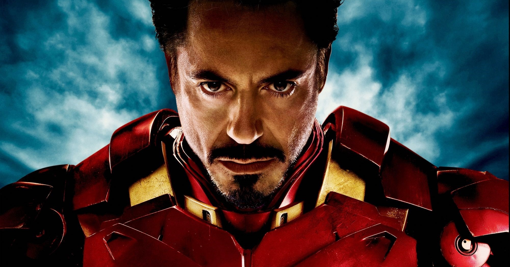
Vasember
Vasember
Anthony Edward Stark a milliárdos iparmágnás Howard és Maria Stark gyermeke. Howard Stark vállalata, a
Stark Művek az Egyesült Államok legnagyobbjai közé tartozott. Tony már fiatalan nagy érdeklődést mutatott a
gépészet iránt.

Thor
Thor
A „hatalmas” Thor az amerikai képregény ezüstkorában, 1962-ben született meg. Ebben az időben a szuperhősök
népszerűsége ismét növekedni kezdett az olvasók körében. Thor első szereplése a Journey into Mystery című
sorozat 83. számában volt.
Gyűrűk ura
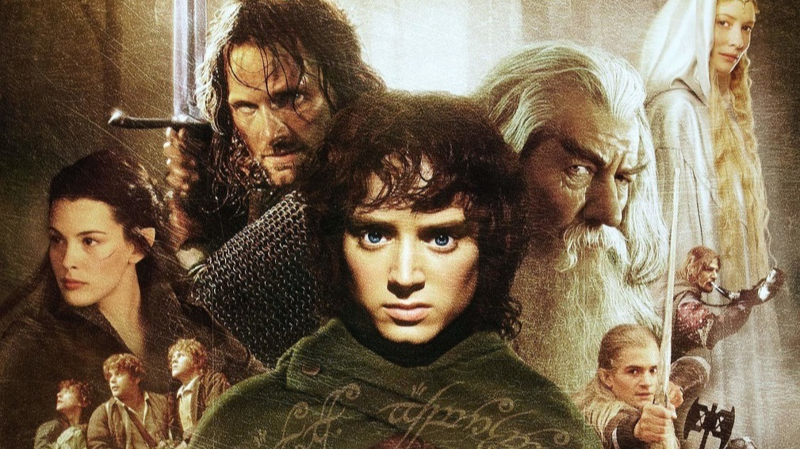
Frodó (Elijah Wood), az ifjú hobbit egy gyűrűt kap Bilbótól, amiről kiderül, hogy az Egy Gyűrű, mellyel a
Sötétség Ura rabszolgasorba taszíthatja Középfölde népeit. Gandalf (Ian McKellen) Völgyzugolyba küldi Frodót,
ahol a tündék legbölcsebb vezetője, Elrond dönt a gyűrű sorsáról. Nincs más lehetőség, a gyűrűt el kell
pusztítani Mordorban, a Végzet-katlanban. A szabadnépek tanácsán megújul a Szövetség, és Gandalf vezetésével
Frodó és társai, a dúnadán Aragorn (Viggo Mortensen), a tünde Legolas (Orlando Bloom), Gimli, a törp (John
Rhys-Davies), és Boromir, az emberek képviseletében, nekivágnak a reménytelen küldetésnek. A jövő attól függ,
hogyan alakul a szövetség sorsa.

Aragorn
Aragorn
Aragorn Hk. 2931. március 1-jén született II. Arathorn és Gilraen fiaként. Még csak kétéves volt, amikor
apja kilovagolt az orkok ellen, és elesett egy ork nyíltól.
Ekkor Aragornt anyja Völgyzugolyba, Elrond házába vitte, hogy ott nevelkedjen..
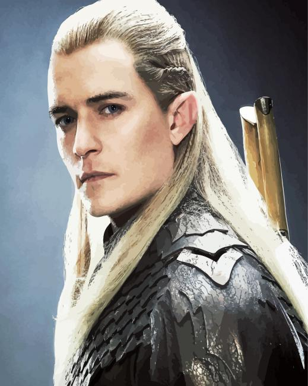
Legolas
Legolas
Legolas apját, Thranduil királyt, képviselve érkezett Völgyzugolyba, és vett részt a Tanácson, ahol
elmondta, hogy a népére bízott Gollam, valószínűleg ork segítséggel, megszökött...
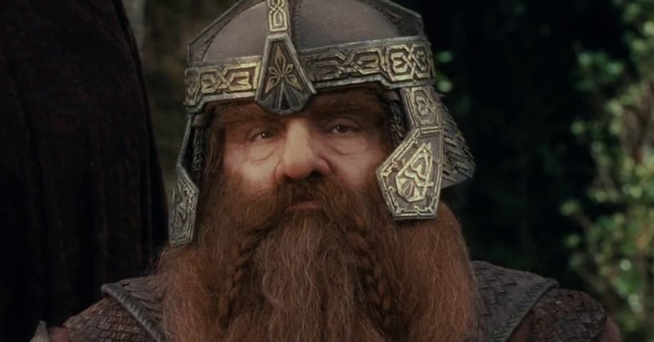
Gimli
Gimli
Gimlivel először Völgyzugolyban találkozunk, Elrond Tanácsán, amin apjával, Glóinnal (Bilbó egykori
útitársával) együtt vett részt. Gimli és Glóin a Magányos Hegyről hoztak hírt..
Harry Potter
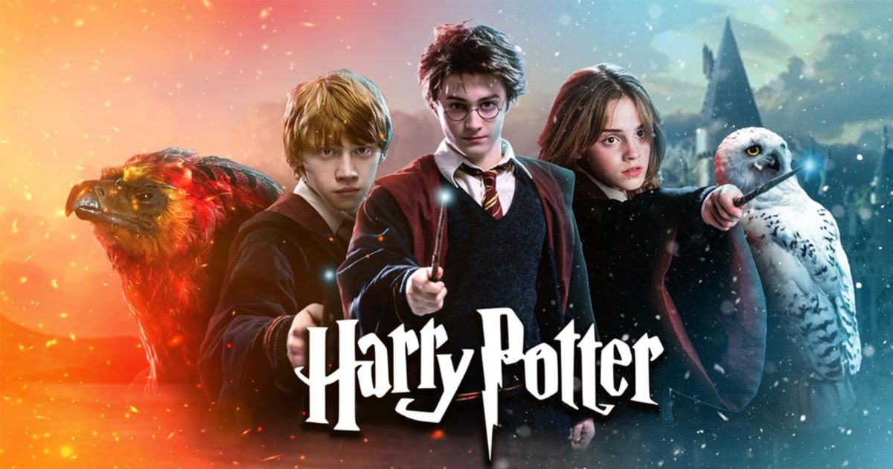
Egy éjszaka a bölcs, öreg mágus, Albus Dumbledore professzor, a Roxfort nevű varázslóiskola igazgatója,
valamint kolléganője, az időnként macskaalakot öltő Minerva McGalagony professzor találkoznak a szélsőségesen
mágiaellenes Dursley család Privet Drive 4. szám alatt található házánál. Ugyanis Petunia Dursley varázserővel
megáldott nővérét, Lily Evanst és férjét, James Pottert meggyilkolta a rettegett feketemágus, Voldemort.
Meglepetésére azonban fiúkkal, Harryvel képtelen volt végezni, így a gyerek megúszta egy sebhellyel,
Voldemortra
pedig visszahullott a halálos átok, és elvesztette testét. A csecsemő Harryt Rubeus Hagrid, a Roxfort óriás
vadőre mentette ki a ház romjai közül, és hozta el a Privet Drive-ra. Dumbledore levélben tájékoztatja
Dursleyéket a történtekről, és azt kéri, hogy mivel ők az egyetlen rokonai a fiúnak, viseljék gondját
unokaöccsüknek.

Harry Potter
Harry Potter
Harry Potter máguscsaládból származó, ún. „félvér” varázsló, szülei James Potter (aranyvérű varázsló)
Lily
Evans (mugli születésű boszorkány). Mindketten egy nagyhatalmú sötét varázsló, Voldemort keze által haltak
meg.

Ron Weasley
Ron Weasley
Ron a Weasley család hatodik gyermekeként látta meg a napvilágot. Kiskorában sokat rendetlenkedtek vele
ikerbátyjai, egy ilyen esetből származik pókiszonya is: Fred pókká változtatta a plüssmackóját.
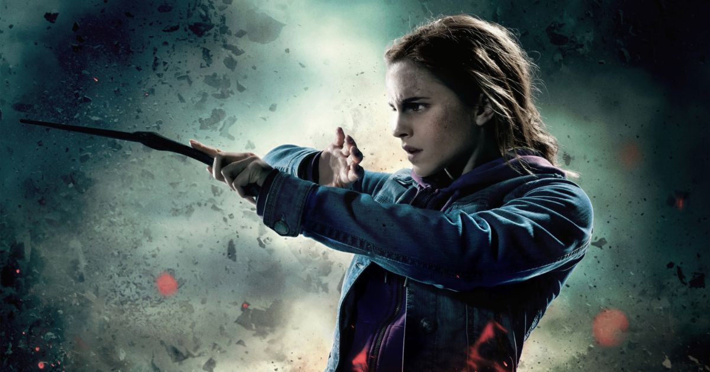
Hermione Granger
Hermione Granger
Hermione a Roxfort Boszorkány- és Varázslóképző Szakiskola diákja, a Griffendél ház tagja, az iskola
egyik
éltanulója. Ő a sorozat női főszereplője, Harry Potter és Ron Weasley mellett ő a harmadik legfontosabb
szereplő.
John Wick
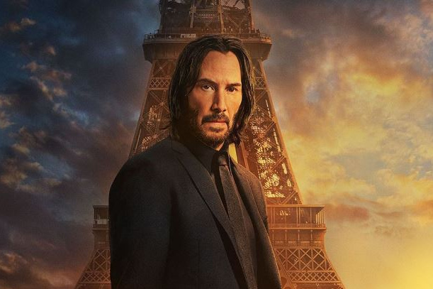
Egy John Wick (Keanu Reeves) nevű férfinak nemrég hunyt el rákbeteg felesége, Helen (Bridget Moynahan). A nő
hátrahagyott egy ajándékot a férjének, egy Daisy nevű kiskutyát, valamint egy levelet, melyben elmondja, hogy
Daisy segít feldolgozni a halálát. Kezdetben Daisy közömbös, végül a kiskutya kötődik Johnhoz, amint egyik nap
elviszi kocsikázni a 69-es évjáratú Mustangjával. benzinkútnál egy három tagú orosz bandával találkoznak.
VEzetőjük Joszef Taraszov (Alfie Allen), aki ragaszkodik a kocsija megvételéhez, de John nem hajlandó neki
eladni, ezért Joszef egy rosszindulatú megjegyzést tesz a távozása előtt. A három férfi követi Johnt az
otthonáig és késő éjszaka betörnek hozzá, majd megtámadják Johnt; végignézetik vele, hogy hogyan ölik meg
Daisyt, ezt követően ellopják a kocsiját.
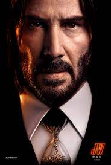
John wick
John wick
John Wick, egy visszavonult bérgyilkos áll, aki bosszút esküszik az ellopott autója és a meggyilkolt
kiskutyája miatt, amit még a rákban elhunyt felesége hagyott rá a halála előtt
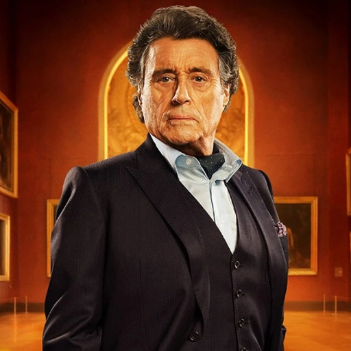
Winston Scott
Winston Scott
Winston Scott a New York Continental Hotel jelenlegi tulajdonosa és menedzsere, egy olyan létesítmény,
amely semleges területként és biztonságos zónaként működik a bűnözők és bérgyilkosok számára.
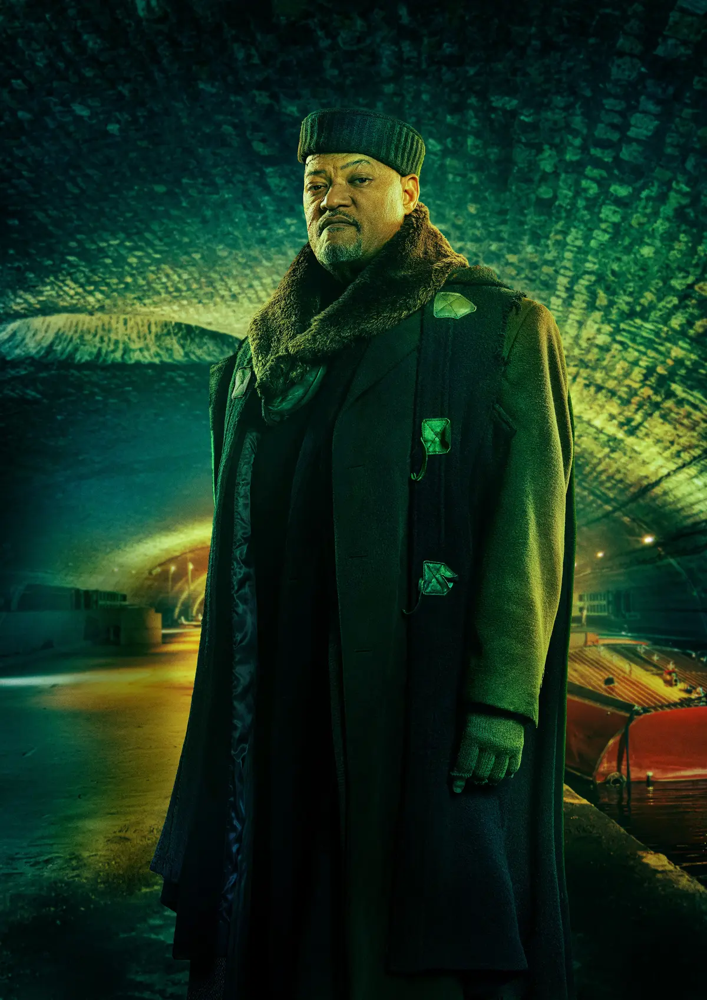
A Bowery király
A Bowery király
A Bowery King a The Soup Kitchen, egy hajléktalanszállónak álcázott New York-i alvilági hírszerzési
hálózat
erőteljes vezetője. A Bowery King katonák és kémek hálózatát irányítja..
Kingsman
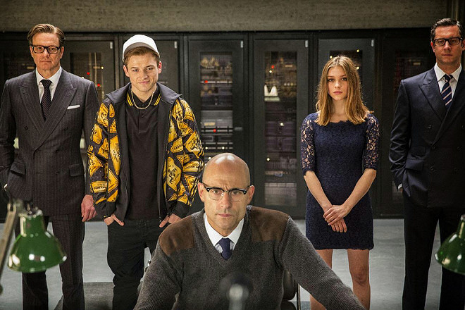
Tökit kicsapták az iskolából, munka nélkül tengődik, az anyja lakásában lakik és zűrös életet él. Amikor
autólopásért lecsukják, felhívja az apja halála után kapott érmén lévő telefonszámot. Ki is hozza őt a sittről
a kifogástalan modorú, angolosan elegáns kém, Harry Hart, akinek annak idején a fiú apja mentette meg az
életét. Harry megütközik a srác életmódján, ám lenyűgözi a fiú tehetsége és az intelligenciája, ezért
felajánlja neki, hogy jelentkezhet a csapatába, ahol igazi James Bondot faragnak belőle.

Gary Unwin
Gary Unwin
Gary Unwin Lee és Michelle Unwin gyermekeként 1992. június 3-án született Dél-Londonban. Apja kémnek
készült a szigorúan titkos, földalatti szervezet, a Kingsman számára.
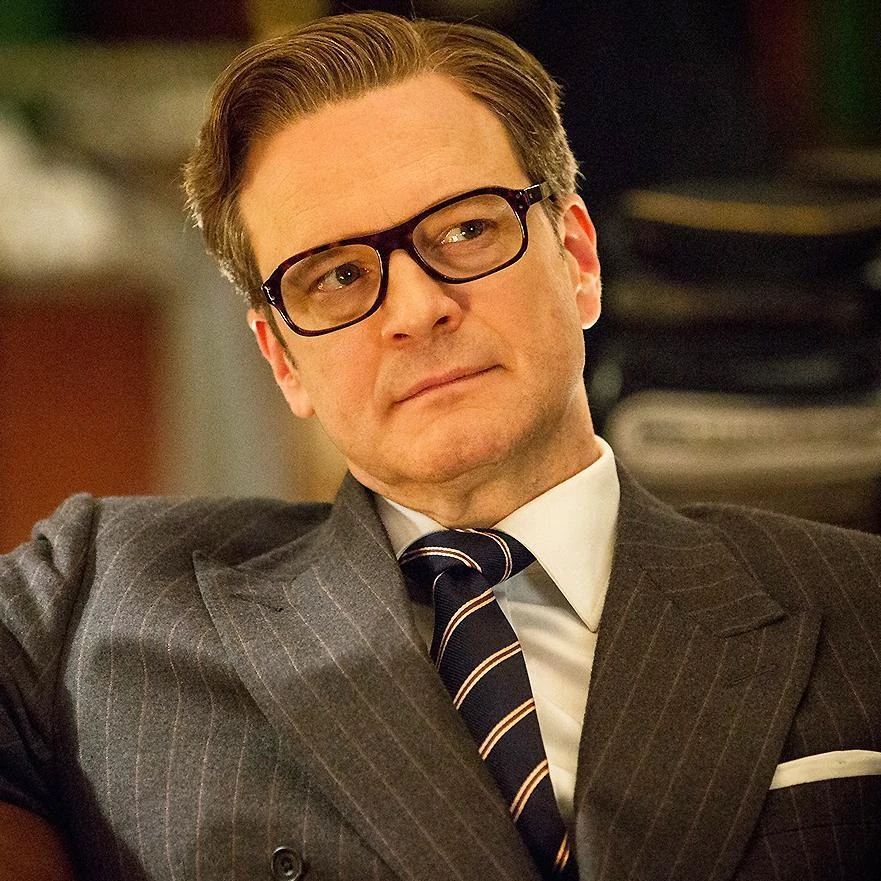
Harry Hart
Harry Hart
Harry korai életéről keveset tudni, bár a Kingsman: The Golden Circle-ben elhangzott, hogy lepkeápoló
szeretne lenni, ehelyett a brit hadsereg tisztét választotta. Miután egy ideig katonai szolgálatot
teljesített, beszervezték a Kingsmanbe.
Merlin
Merlin
1997-ben Merlin és Galahad kiképzési küldetésen volt a Közel-Keleten Lee Unwin és James Spencer
gyakornokokkal (a Kingsman Ügynökség Lancelot posztjára jelöltek). Miközben egy katonát tartottak fogva
információért, gránáttűt húzott, Lee pedig feláldozta magát..